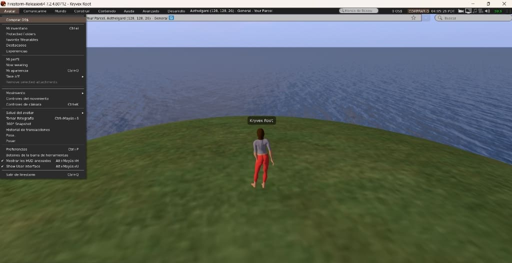

I wanted a local virtual space running entirely on my own machine without dealing with external servers or cloud dependencies. Set up a standalone OpenSimulator instance on port 9000 using a simple SQLite backend for the region data.
Getting Firestorm to connect locally takes a couple of workaround steps because the viewer is heavily tied to public directory grids. You have to skip their automatic grid lists, type the loopback address manually (http://127.0.0.1:9000/), and provision the user account directly through the server terminal console.

The whole setup is straightforward: the simulation runs as long as the terminal process is open. Close the console, the server stops. No hidden background services.
Next steps are mostly testing physics configurations and writing some basic scripts to see how things behave under the hood.